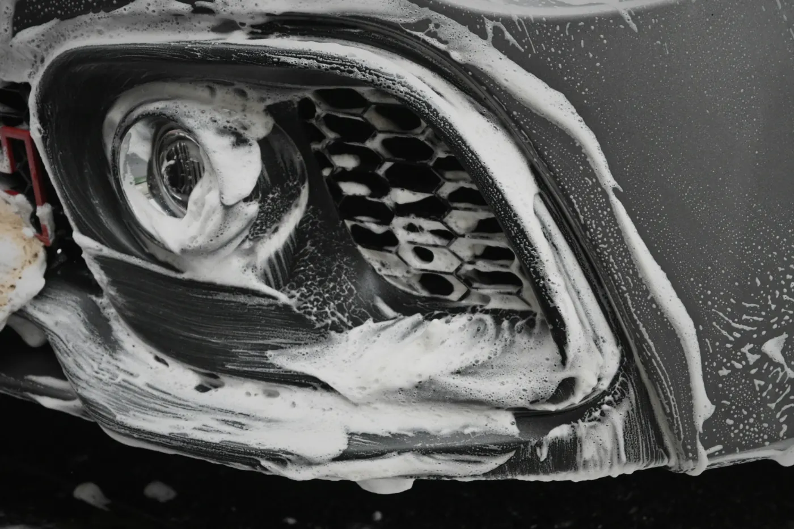

Utah extras · Undercarriage
Winter Salt Flush: an undercarriage wash for road salt.
Utah roads get salt and magnesium chloride brine all winter, and it collects where a normal wash never reaches: the frame rails, brake-line runs and suspension. The Winter Salt Flush is a degreasing undercarriage wash that lifts it off and rinses it out, done at your home anywhere I work in the Salt Lake Valley.
- Winter Salt Flush
- $50For a sedan; the quote builder prices your vehicle.
- Trail Flush
- $70For a sedan, after off-road days. Mud packed solid +$50, confirmed at the walkaround.
- When
- Year-roundBest after storms and at the end of salt season.
What it does
Salt isn't neutralized. It's flushed out.
Road salt is a neutral salt, so there's nothing to "neutralize": the only fix is to dissolve it and carry it away with water. The flush does that underneath, where the salt sits longest.
- A degreaser worked into the frame rails, crossmembers, suspension, brake-line runs and wheel wells, to cut the oily road film that holds salt in the seams
- A long, thorough rinse that carries the salt, magnesium chloride and road grime out of the seams underneath
- The degreaser leaves a thin film of corrosion inhibitors behind (its maker's claim): some anti-corrosion protection on the metal, to help slow rust
Magnesium chloride pulls moisture out of the air, so a salty film underneath can stay damp longer than plain water would. That's why getting it off matters more than how the car looks from the outside. The chemistry, with sources, is on the science page.
What it doesn't do
Honest limits.
A flush slows corrosion by taking away what feeds it. It isn't a repair.
- It doesn't remove rust that's already there, or treat scale and flaking metal.
- It isn't an undercoating or a rustproofing treatment, and the inhibitor film wears with driving and the next storm's salt — which is why it's worth repeating through the winter.
- It cleans what water and a degreaser can reach underneath; it doesn't open up sealed panels or the inside of closed frame sections.
- It's the underside only. The paint, wheels and glass are a detail; add one in the quote builder if you want both on the same visit.
If I see something underneath that looks like damage, I'll show you a photo — that's all. I don't sell repairs.
When to book
After storms, and at the end of the season.
- 01
After a storm
Once the roads have been treated and you've driven on them, the brine is already underneath. A flush in the days after a storm gets it off before it sits for weeks.
- 02
Through the winter
How often depends on how much you drive on treated roads. A daily commute on salted highways or up the canyons collects more than a car that mostly stays parked.
- 03
At the end of salt season
In spring, one last flush takes off what built up over the winter, so it doesn't sit there through the warm months.
- 04
Weather
November to March, mobile visits cover interiors, rinseless washes, headlights and undercarriage flushes. If freezing temperatures would hurt the result, I'll text you the evening before, and your deposit always carries over.
How it's done
Bottom up, then a long rinse.
- 01
Loosen
Slush, loose salt and mud come off first with an undercarriage wand on the pressure washer.
- 02
Degrease
The degreaser goes on from the bottom up — frame rails, crossmembers, suspension, brake-line runs and wheel wells — and dwells a few minutes. It's never left to dry.
- 03
Rinse
A thorough rinse with the undercarriage wand, front to back, until the run-off is clear.
- 04
Trail Flush
The same wash, with a second pass on packed mud and extra time on skid plates, suspension and wheel wells, where mud dries hard and holds moisture.
For a mobile visit I need an outdoor spigot and an outlet within about 50 feet. Where I work · Utah extras on the detailing page.
Price
One price per vehicle.
The Winter Salt Flush is $50 for a sedan, and the Trail Flush is $70 for a sedan. Trucks, SUVs and vans have more underneath, so the quote builder prices your vehicle.
Add a flush to any exterior or full detail in the quote builder, or text me and mention it when you book. Prices before Utah sales tax where it applies.
Questions
Salt flush questions.
How often should I flush the underside in a Utah winter?
After storms, once you've driven on treated roads, and once more at the end of salt season. Beyond that it depends on how much you drive on salted roads: a daily highway or canyon commute collects far more than a car that mostly stays parked.
Will a salt flush stop my car from rusting?
No wash can promise that. The flush takes away the salt that drives corrosion, and the degreaser leaves a thin film of corrosion inhibitors behind (its maker's claim), so it helps slow rust. It doesn't remove rust that's already there, and it isn't an undercoating or rustproofing treatment.
What's different about magnesium chloride?
Magnesium chloride brine pulls moisture out of the air, even when the air is fairly dry, so a salty film underneath can stay damp longer. Like road salt, it isn't neutralized by anything; it has to be dissolved and rinsed away. Sources are on the science page.
Can you do it when it's freezing out?
Flushes run all winter on mobile visits. If freezing temperatures would hurt the result, I'll text you the evening before to move the appointment; weather changes never cost you a fee, and your deposit carries over.
What's the difference between the Winter Salt Flush and the Trail Flush?
The same degreasing wash. The Winter Salt Flush is built for road salt and brine; the Trail Flush adds a second pass and extra time on skid plates, suspension and wheel wells for mud and dust after off-road days. Mud packed solid is +$50, confirmed at the walkaround.

Book
A price for your exact car, up front.
Pick your vehicle and services online, or text me a few photos and I'll tell you what's likely needed — confirmed when I see the vehicle.
(385) 218-0990